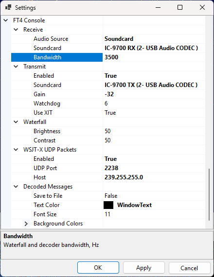
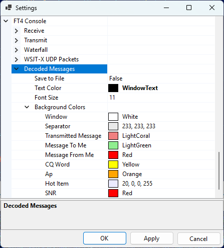
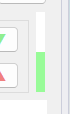
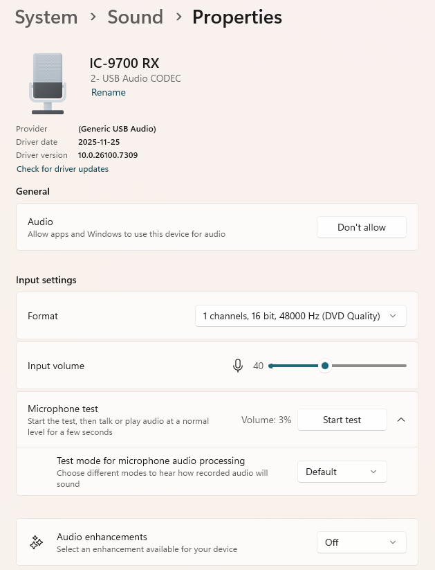
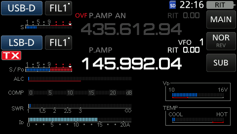
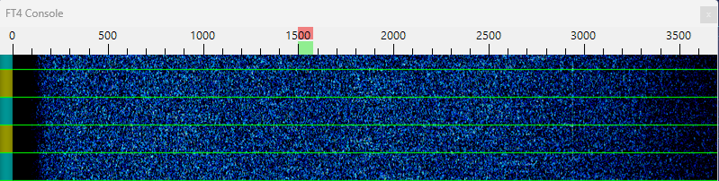

Setting Up FT4 Console
FT4 Console Settings
To configure FT4 Console, click on Tools / Settings to open the Settings dialog and scroll down to the FT4 Console section:

Receive
Audio Source - either SDR or Soundcard. SDR is the default, but it is also possible to receive FT4 from the transceiver via a soundcard;
Soundcard - if Soundcard is selected as audio source, this field should contain the soundcard to use. Windows allows you to rename the soundcards, so you can change the default name, such as "USB Audio CODEC" to something that is easy to recognize, "IC-9700 RX" in my case;
Bandwidth - the receiver bandwidth, in Hertz. Affects both the waterfall display and decoding. See Receiver Bandwidth below.
Transmit
Enabled - by default, the transmit function is disabled. Set this field to true if you want to transmit FT4;
Soundcard - the soundcard that sends the FT4 audio to the transmitter;
Gain - the FT4 output audio is mutliplied by this factor (in dB). The default is -30 dB, see the TX Gain section below for the instructions how to find the correct value;
Watchdog - the maximum transmit time. After the specified number of minutes, if the user has not performed any actions, the transmissions automatically stop;
Use XIT - offset the transmitter frequency relative to the receiver depending on the transmitted audio tone. See Using XIT below for details.
Waterfall
Brightness - waterfall brightness, 0 to 100;
Contrast - waterfall contrast, 0 to 100;
WSJT-X UDP Packets
Enabled - enable sending the UDP packets with information about decoded messages and QSO. The format of the messages is the same as in WSTT-X;
UDP Port - the port to which the messages will be sent;
Host - this could be a Unicast or Multicast address. See UDP Packets below.
Decoded Messages
Save to File - when set to true, all received and transmitted messages will be saved to a file in the Data folder, FT4 sub-folder;
Text Color - the text color in the Decoded Messages window;
Font Size - the font size in the Decoded Messages window;
Background Colors - the background colors of the messages of different types:

RX Signal Strength
When FT4 is decoded from the SDR, the signal strength is adjusted automatically, but when the signals are coming from a soundcard, the amplitude of the input audio must be adjusted so that the signal strength bar is at about 50%:

This could be done in several ways.
Option 1: Transceiver Menu
In IC-9700 press Menu / Set / Connectors / USB AF/IF Output and adjust AF Output Level.
Option 2: Windows Audio Settings
In Windows 11 open Settings / System / Sound, select your soundcard, and adjust the Input Volume setting:

TX Gain
The amplitude of FT4 audio output must be set carefully to ensure the desired output power and to prevent transmission of audio harmonics. To adjust the output amplitude, click on the Tune button in FT4 Console to start transmission and adjust Transmit / Gain in the Settings dialog. Use the meters in the transceiver to ensure that the radio delivers full output power, and that the ALC level is around zero.
In IC-9700 you can display all meters in the satellite mode by pressing Menu / Meter, as shown in the screenshot below. S/Po must be at the maximum, and ALC at the minimum. For IC-9700 the optimal TX gain is about -32 dB.

Once the audio output level is set, adjust the output power of your radio according to your operating needs. In most cases only a few watts are required for satellite contacts if a good antenna is used.
Receiver Bandwidth
The FT4 Console / Receive / Bandwidth parameter in the Settings dialog controls the bandwidth of the FT4 decoder, as well as the frequency segment shown on the waterfall display.
When decoding from an SDR, set it to 5000 Hz, the bandwidth of the SDR receiver in the USB-D and LSB-D modes;
When decoding from a soundcard, set this parameter to match the receiver bandwidth of your radio. Make sure that the dark area on the waterfall is not wider than 200-300 Hz at each side, as in the screenshot below:

In most transceivers the RX bandwidth is around 3000 Hz, even in the Data mode. IC-9700 may we configured for a bandwidth of 3600 Hz in USB-D and LSB-D modes.
Using XIT
Keep the Transmit / Use XIT option set to true unless unless your radio is unable change the TX frequency when transmitting.
When this option is enabled, the audio tone sent to the transmitter is always in the range of 1000 Hz to 2000 Hz. To transmit signals outside of this range, the transmitter frequency is changed up or down. For example, to transmit on 3200 Hz, the transmitter is tuned 2000 Hz up (or down for inverting transponders), and the audio tone sent to the radio is 1200 Hz.
The XIT mode serves two purposes:
- it prevents the odd audio harmonics from being transmitted since they are outside of the transmitter passband;
- it ensures that you can transmit on any audio frequency, even outside of the transmitter passband.
UDP Packets
SkyRoof can send UDP packets with information about decoded messages and completed QSO, in the same format as WSJT-X. There is a number of programs that listen to such messages and use them to write QSO to the log or to update Worked statistics. Some even reply to these messages with callsign status information, so that SkyRoof can color-highlight the callsigns according to their Needed status.
This option is disabled by default. You can enable it in the Settings dialog.
Both Unicast and Multicast messaging is supported. In the Unicast mode the messages can be sent to only one program. If you start another program that listens on the same UDP port, that program fails with the Port in Use error. In the Multicust mode multiple programs can receive messages on the same port. Use the multicast mode if possible, or use unicast with older programs that do not support multicast.
UDP packets are sent in the multicast mode if the IP address is in the range of 239.0.0.0 - 239.255.255.255, otherwise they are sent as unicast.
The default settings are:
Unicast:
- IP Address: 127.0.0.1
- Port: 7311
Multicast:
- IP Address: 239.255.255.0
- Port: 2238